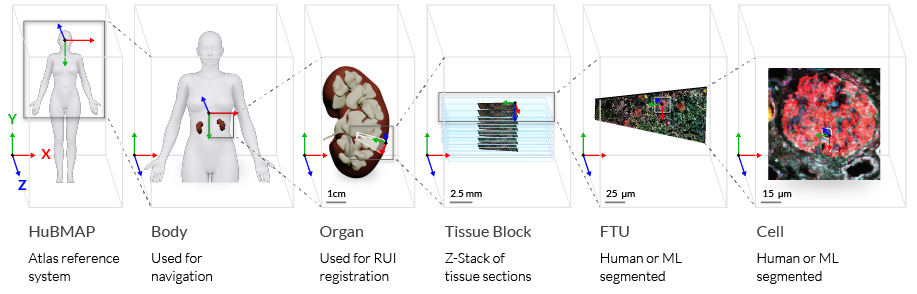

CCF Ontology
Overview
The CCF Ontology comprises a Clinical Ontology, Semantic Ontology, and Spatial Ontology, see Figure 1. Collectively, the three ontologies make up the CCF Ontology (also called union ontology) that supports spatially and semantically explicit search, filter, and browsing in the HuBMAP Portal.
Figure 1. CCF Knowledge Architecture. Tissue samples and datasets are annotated using the CCF Clinical, CCF Semantic, and CCF Spatial Ontologies.
Clinical Ontology. Captures CCF relevant clinical and other metadata such as donor sex, age, tissue sample author, and technology used. It does not capture all metadata associated with HuBMAP data.
Semantic Ontology. Mirrors the ASCT+B tables and includes the CCF Anatomical Structures Partonomy of anatomical structures and the CCF Cell Types Ontology. Sources of ontology terms are UBERON, FMA, and Cell Ontology (CL).
Spatial Ontology. Defines the position, rotation, and size of anatomical structures—at the macro, micro, and single-cell level—in correspondence to the HuBMAP Atlas reference system, shown on left in Figure 2. Note that all anatomical structures are semantically annotated using terms from the Semantic Ontology.
Figure 2. Spatial placement of anatomical structures in relation to the HuBMAP Atlas reference system. Note that spatial entities can use different coordinate systems that are “mapped” into the common reference system.
References
- Herr II, Bruce W., Ellen M. Quardokus, Leonard E. Cross, Elizabeth G. Record, Griffin M. Weber, and Katy Börner. 2020. HuBMAP CCF Ontology v1.0.0 (OWL format).
- Herr II, Bruce W., Ellen M. Quardokus, Leonard E. Cross, Elizabeth G. Record, Griffin M. Weber, and Katy Börner. 2020. HuBMAP CCF Ontology Source Code Repository.
- Börner Katy, Ellen M. Quardokus, Bruce W. Herr II, Leonard E. Cross, Elizabeth G. Record, Yingnan Ju, Andreas D. Bueckle, James P. Sluka, Jonathan C. Silverstein, Kristen M. Browne, Sanjay Jain, Clive H. Wasserfall, Marda L. Jorgensen, Jeffrey M. Spraggins, Nathan H. Patterson, Mark A. Musen, and Griffin M. Weber. 2020. "Construction and Usage of a Human Body Common Coordinate Framework Comprising Clinical, Semantic, and Spatial Ontologies." arXiv:2007.14474v1.